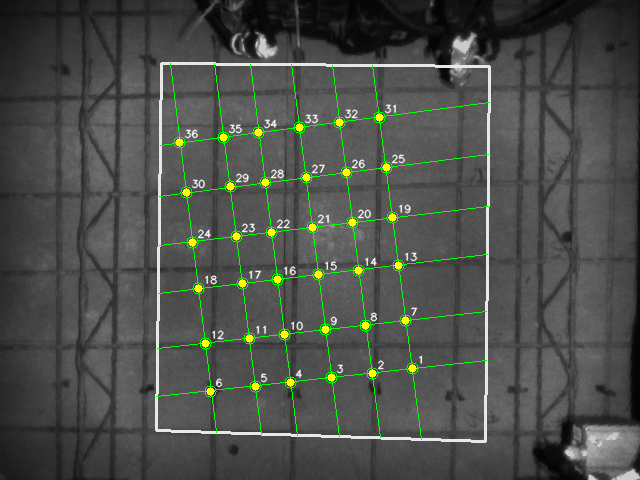
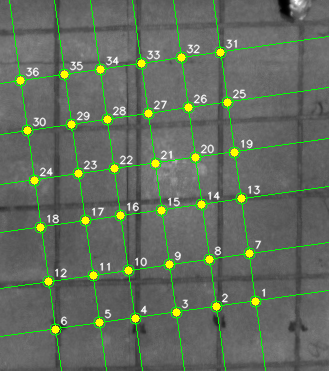

基准
全流程
回到 08:21 主链：深度响应、局部峰值、连续钢筋条/ridge 验证、spacing 收束；梁筋只在最终点级过滤。
方案内部基准。
mean 1280.94 ms
median 1228.98 ms
36 points
scheme drift max 0.00 px
reference drift max 0.00 px


线族明细
[{"angle_deg": 82.0, "line_rhos": [-210.951, -171.08, -130.727, -89.035, -53.419, -8.462], "peak_rhos": [-310.0, -307.0, -302.0, -283.0, -250.0, -240.0, -232.0, -220.0, -217.0, -211.0, -198.0, -185.0, -171.0, -150.0, -147.0, -131.0, -122.0, -100.0, -90.0, -88.0, -73.0, -53.0, -30.0, -28.0, -9.0, 10.0, 13.0, 28.0, 39.0], "continuous_rhos": [-231.725, -219.349, -210.951, -198.532, -184.392, -171.08, -130.727, -89.035, -72.718, -53.419, -30.654, -8.462, 10.029, 28.119]}, {"angle_deg": 172.0, "line_rhos": [-333.157, -285.197, -230.077, -182.665, -132.273, -81.784], "peak_rhos": [-400.0, -397.0, -392.0, -379.0, -369.0, -350.0, -347.0, -342.0, -332.0, -310.0, -304.0, -292.0, -286.0, -282.0, -262.0, -252.0, -230.0, -212.0, -190.0, -186.0, -182.0, -160.0, -152.0, -134.0, -132.0, -110.0, -105.0, -92.0, -82.0, -60.0, -50.0, -40.0, -36.0, -32.0, -10.0, -2.0], "continuous_rhos": [-396.527, -391.64, -349.994, -347.149, -342.544, -333.157, -310.122, -304.425, -292.572, -285.197, -230.077, -211.458, -189.739, -185.649, -182.665, -159.943, -152.658, -132.273, -109.942, -105.051, -92.185, -81.784, -59.975]}]